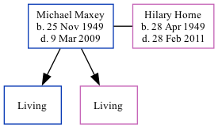

Michael John Maxey 1949 - 2009
[ Home ] | [ Calendar ] | [ Surnames Index ] | [ Family History ]Michael Maxey, the husband of Hilary Ann Horne (the cousin on the father's side of Nigel Horne), was born in North Shields, Northumberland, England on Nov 25, 1949<span class="citation">1,2</span> and. He married Hilary (with whom he had 2 surviving children <a href="I1040.html">Noel Peter</a> and <a href="I1041.html">Sarah Louise</a>) in Tynemouth, Tyne and Wear, England around Aug 1971<span class="citation">3</span> (Jul/Aug/Sep), which is also where he died on Mar 9, 2009<span class="citation">2</span>.
Citations
- England & Wales, Birth Index: 1916-2005 Online publication - Provo, UT, USA: The Generations Network, Inc., 2008.Original data - General Register Office. England and Wales Civil Registration Indexes. London, England: General Register Office. © Crown copyright. Published by permission of the Cont
- England and Wales, Death Index, 2007-2013 Ancestry.com Operations, Inc.
- England & Wales, Marriage Index: 1916-2005 Online publication - Provo, UT, USA: The Generations Network, Inc., 2009.Original data - General Register Office. England and Wales Civil Registration Indexes. London, England: General Register Office. © Crown copyright. Published by permission of the Cont
Media
England & Wales births 1837-2006 - BMD/B/1949/4/AZ/000826/037
England & Wales marriages 1837-2008 - BMD/M/1971/3/AO/001436/093
Family Tree
Generated by Ged2Site. Last updated on Jul 20, 2025